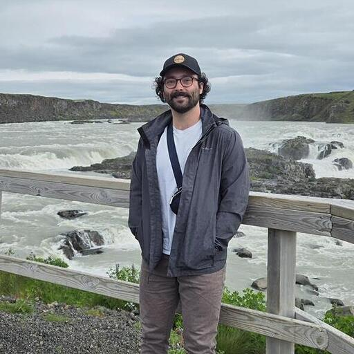

Austin Pounderresearch
Experimental and computational chemistry for understanding reaction mechanisms, molecular dynamics, and predictive models of chemical reactivity.
Chemistry across experiment, computation, and scale.

I work at the interface of experimental and computational organic chemistry
My research combines quantum chemistry, molecular dynamics, and emerging machine-learned models to study chemical reactivity across scales—from small molecule reactivity to conformational ensembles in nucleic acids.
The central objective is practical: develop chemically interpretable computational approaches that extend the scale, speed, and scope of mechanistic questions that can be addressed, accelerating organic chemistry.
Four connected research directions.
Across projects, the common theme is mechanistic understanding: connecting organic reactivity, molecular structure, dynamics, and predictive models.
Organic synthesis & catalysis
Experimental and computational studies of synthetic organic reactions, with particular emphasis on transition-metal catalysis, methodology development, reaction optimization, and the mechanistic factors that control productive reactivity.
Reaction mechanisms, selectivity & ML potentials
Electronic-structure calculations and machine-learned interatomic potentials to map reaction pathways, locate transition states, rationalize selectivity, and accelerate mechanistic workflows.
Molecular dynamics & nucleic acids
Simulation and ensemble analysis of RNA and DNA structure, conformational heterogeneity, ionic effects, and sampling convergence.
Photochemistry & molecular probes
Combining electronic-structure calculations, simulation, synthesis, and experiment to understand fluorescent probes, photobasicity, and biomolecular sensing.